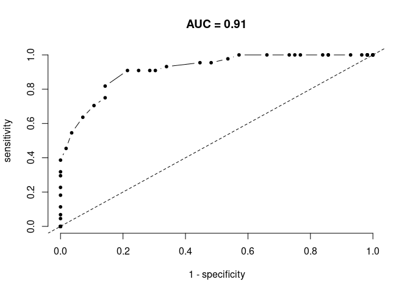

The goal of monkeytools is to provide some utilities functions that I use routinely. Every contribution is welcomed.
Installation
You can install the development version of monkeytools from GitHub with:
devtools::install_github("emilio-berti/monkeytools")monkeytools is not released on CRAN.
Example
Simple assessments of species distribution models.
Let’s first generate some data for a virtual species that never goes above 130 meters.
library(monkeytools)
library(raster)
#> Loading required package: sp
data(volcano)
r <- raster(volcano)
xy <- xyFromCell(r, sample(1:ncell(r), 100))
x <- extract(r ,xy) #elevation
p <- ifelse(x < 130, 1, 0) #real presence/absence - doesn't like heights
occ <- data.frame(x = xy[, 1], y = xy[, 2], p = p) #combined in a dataframe
head(occ)
#> x y p
#> 1 0.76229508 0.3620690 1
#> 2 0.81147541 0.8103448 0
#> 3 0.92622951 0.1206897 1
#> 4 0.36885246 0.2471264 0
#> 5 0.68032787 0.2241379 1
#> 6 0.04098361 0.4195402 1
# sdm potential output
sdm <- 1 / r + rnorm(ncell(r), 0, .001) #sdm predictions
sdm <- sdm - sdm@data@min
sdm <- sdm / sdm@data@maxA very useful summary table is the confusion matrix. The confusion table calculates the fraction of correctly predicted occurrences based on observed data. For this, SDM output needs to be binarized.
sdm_bin <- sdm
sdm_bin[sdm < .5] <- 0
sdm_bin[sdm >= .5] <- 1
confusion(sdm_bin, occ)
#> $confusion.table
#> obs.presence obs.absence
#> pred.presence 48 8
#> pred.absence 6 38
#>
#> $specificity
#> [1] 0.8571429
#>
#> $sensitivity
#> [1] 0.8636364The confusion matrix is used in the famous AUROC curve, which shows how much some statistics extracted from the confusion matrix change for different binarization thresholds. The area under the AUROC curve (AUC) measures how well the SDM fits data better than random (dashed line). There are other (and better) summary statistics for goodness-of-fit of SDMs, but AUC remains one the most adopted.

And for a very bad SDM the two lines largely overlap.